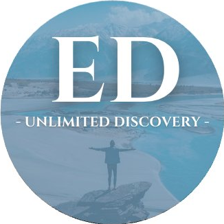
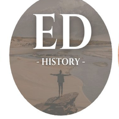
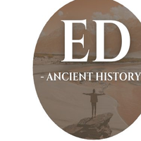
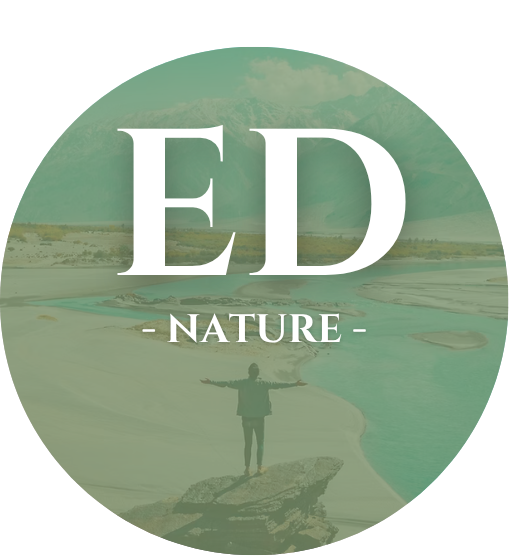
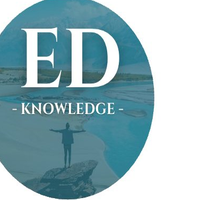
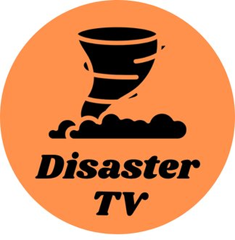

Nine channels, one idea: making history, nature, science and exploration accessible to everyone, without the jargon.
One common trunk for general topics, and six branches each digging into their own territory.

The general channel. The entry point into the whole Easy Documentary universe.

Easy Documentary HistoryEmpires, wars, figures of the past Visit →
Easy Documentary Ancient HistoryAncient civilizations, great builders Visit →
Easy Documentary NatureWildlife and ecosystems Visit →
Easy Documentary KnowledgeScience, engineering, how things are made Visit → Easy Documentary TravelTravel and discovery Visit → Easy Documentary ExploreDiscovery and exploration at large Visit →Two independent channels, outside the Easy Documentary galaxy.

Natural and industrial disasters, explained through science.
Visit channel →